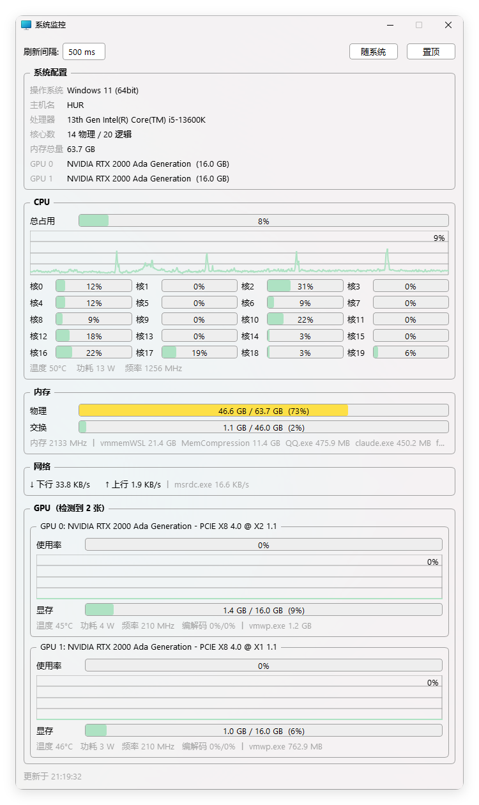
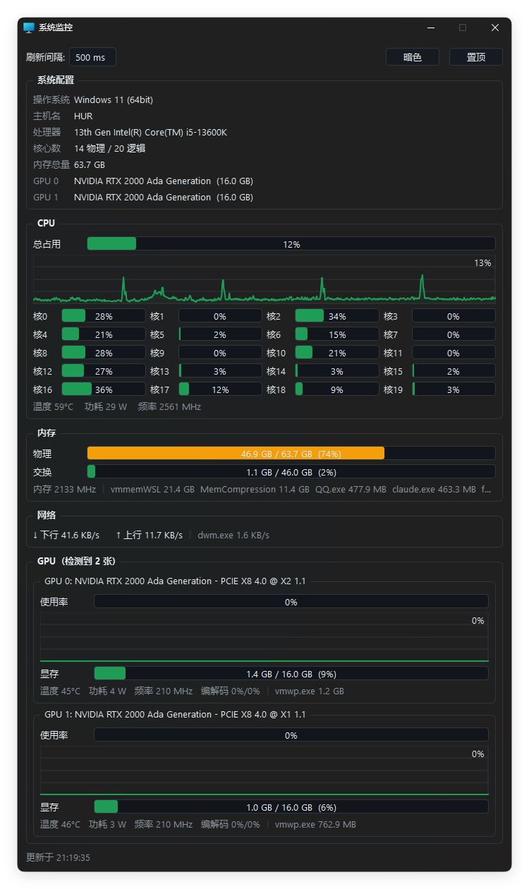
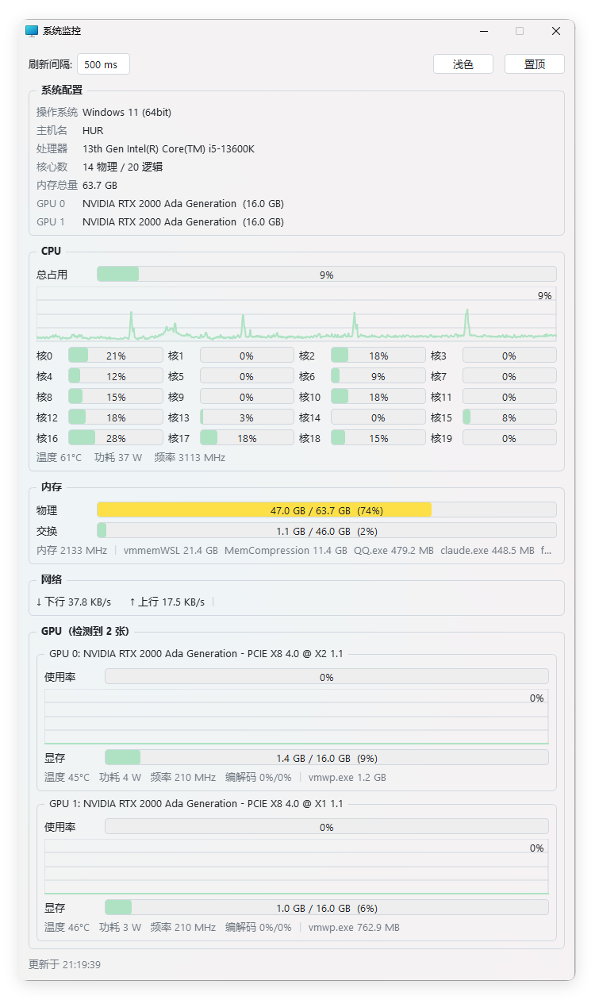

总占用与每核心占用、历史曲线、DTS 真实温度、EMI 硬件功耗、随睿频实时变化的当前频率。
每张卡独立卡片：使用率曲线、显存、温度 / 功耗 / 频率 / 编解码，标题实时显示 PCIe 链路（x8 4.0 @ x1 1.1）。
任务管理器同源数据，按 CUDA luid 精确归卡；WSL2 的占用一眼识别（归属 vmwp.exe）。
ETW 内核级追踪，实时列出占用带宽最高的进程；总上下行速率常驻显示。
物理 / 交换占用、内存条频率、占用最高的进程排行，后台枚举不卡界面。
Windows 11 原生 DWM 背景材质，三态主题切换，窗口置顶，托盘常驻，分区刷新频率可调。